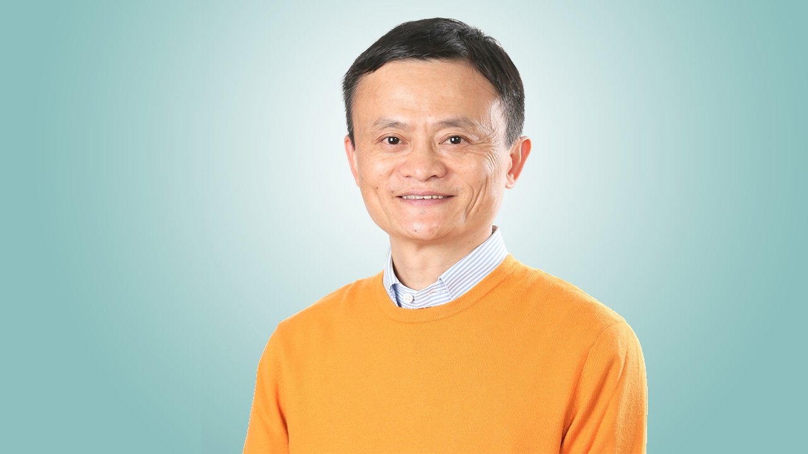

Jack Ma
From Failure To Success
The story of how one man went from Nothing To Something.
- 1964 - Born in China (September 10).
- 1988 - Graduated from Hangzhou Teacher's Institute (Hangzhou Normal University).
- 1989 - Applied to Harvard (Got rejected the first time).
- 1990 - Applied to Harvard (Got rejected the second time).
- 1991 - Applied to Harvard (Got rejected the third time).
- 1992 - Applied for a job at KFC (Got rejected - Was the only applicant to get rejected).
- 1993 - Tried to become a police officer (Got rejected) Applied to Harvard (Got rejected the fourth time).
- 1993 - Applied to Harvard (Got rejected the fourth time).
- 1994 - Heard about the internet.
- 1995 - Went to the United States of America.
- 1995 - Launched a website at 9:40 AM one morning, and by 12:30 PM received emails from Chinese investors.
- 1996 - Ma, his wife Cathy and a friend raised US$20,000 and started their first company called China Pages.
- 1998 - The company made 5,000,000 Chinese Yuan which at the time was equivalent to US$800,000.
- 1999 - Quit his job at the China International Electronic Commerce Center.
- 1999 - Went back to China and founded Alibaba, a China-based business-to-business marketplace site in his apartment with a group of 18 friends.
- 2000 - Won a total of a $25 million foreign venture capital investment.
- 2003 - Founded Taobao Marketplace, Alipay, Ali Mama and Lynx.
- 2004 - Approached by eBay to buy but rejected their offer, and instead garnered support from Yahoo co-founder Jerry Yang with a $1 billion investment.
- 2014 - Raised over $25 billion in an initial public offering (IPO) on the New York Stock Exchange.
- 2016 - As of 2016, Ma is the owner of Château de Sours in Bordeaux, Chateau Guerry in Côtes de Bourg and Château Perenne in Blaye, Côtes de Bordeaux.
- 2017 - On September 8th 2017, celebrated Alibaba's 18th year of establishment.
- 2018 - Announced on September 10, 2018 that he will step down as executive chairman of Alibaba Group Holding in the coming year.
- 2019 - Net Worth = US$39.3 billion (March 2019)
Here's a timeline of Jack Ma's life:
Click here for additional information.